07.Service
概念以及原理
KubernetesService定义了这样⼀种抽象：
⼀个Pod的逻辑分组，⼀种可以访问它们的策略，通常称为微服务。这⼀组Pod能够被Service访问到，通常是通过LabelSelector
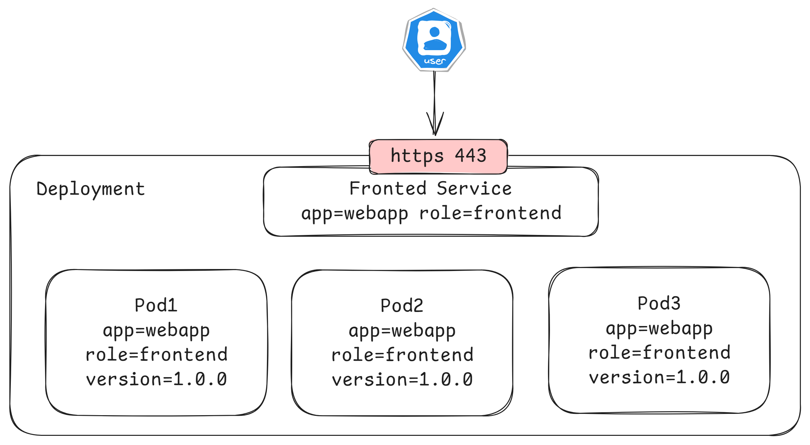
Service在很多情况下只是一个概念，真正起作用的其实是kube-proxy服务进程，每个Node节点上都运行着一个kube-proxy服务进程。当创建Service的时候会通过api-server向etcd写入创建的service的信息，而kube-proxy会基于监听的机制发现这种Service的变动，然后它会将最新的Service信息转换成对应的访问规则。
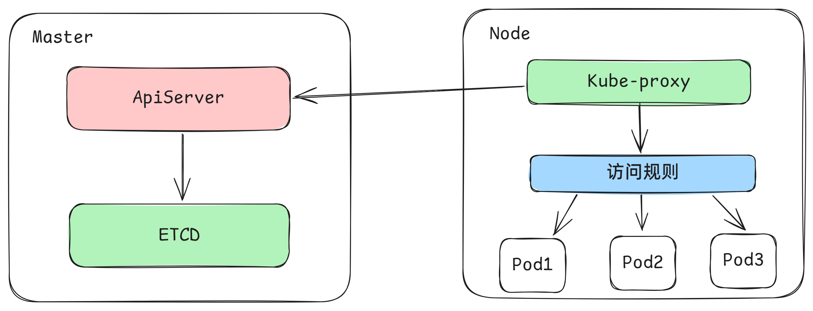
工作模式
kube-proxy目前支持三种工作模式:
userspace模式
userspace模式下，kube-proxy会为每一个Service创建一个监听端口，发向Cluster IP的请求被Iptables规则重定向到kube-proxy监听的端口上，kube-proxy根据LB算法选择一个提供服务的Pod并和其建立链接，以将请求转发到Pod上。 该模式下，kube-proxy充当了一个四层负责均衡器的角色。由于kube-proxy运行在userspace中，在进行转发处理时会增加内核和用户空间之间的数据拷贝，虽然比较稳定，但是效率比较低。
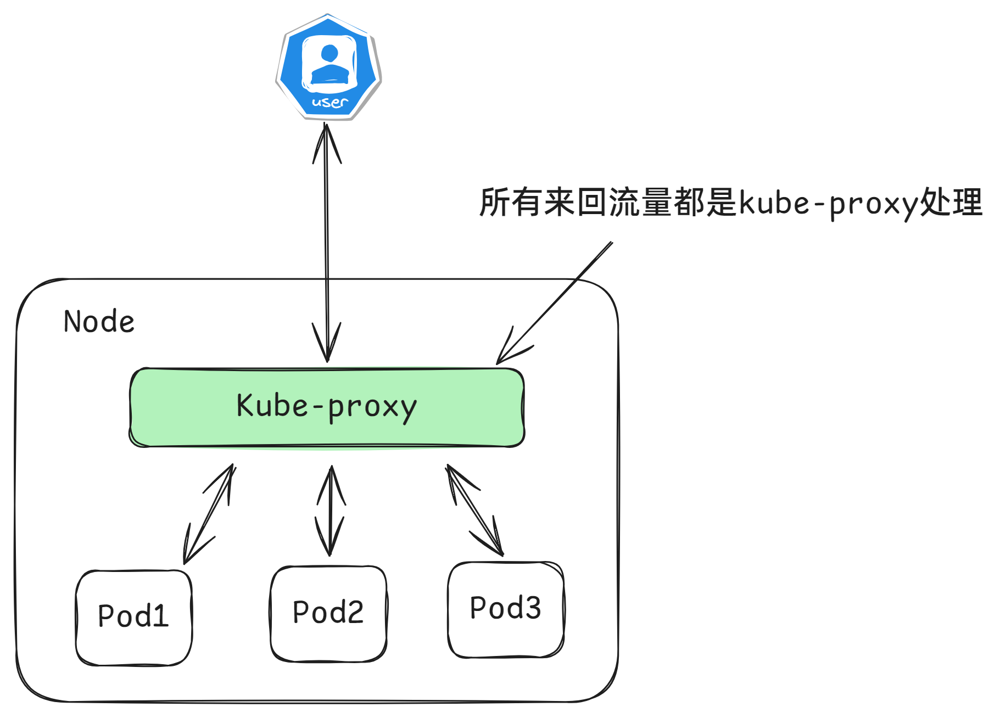
iptables模式
iptables模式下，kube-proxy为service后端的每个Pod创建对应的iptables规则，直接将发向Cluster IP的请求重定向到一个Pod IP。该模式下kube-proxy不承担四层负责均衡器的角色，只负责创建iptables规则。该模式的优点是较userspace模式效率更高，但不能提供灵活的LB策略，当后端Pod不可用时也无法进行重试。
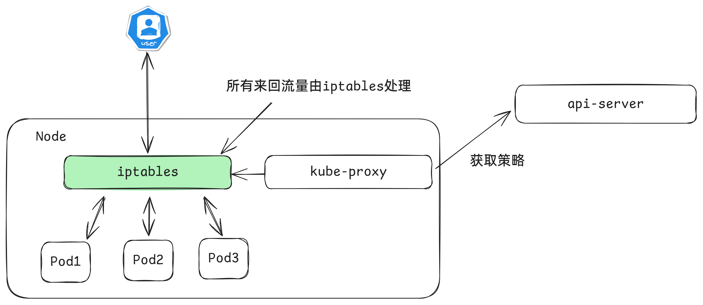
ipvs模式
ipvs模式和iptables类似，kube-proxy监控Pod的变化并创建相应的ipvs规则。ipvs相对iptables转发效率更高。除此以外，ipvs支持更多的LB算法。
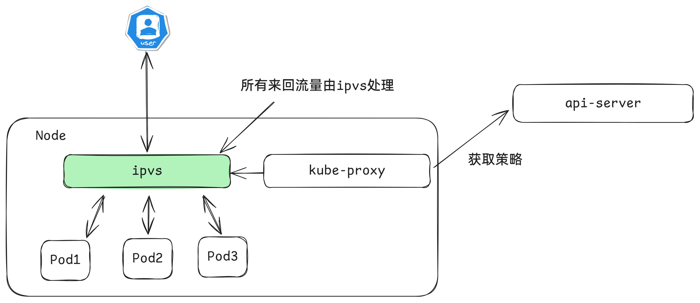
# 创建三个pod
apiVersion: apps/v1
kind: Deployment
metadata:
labels:
app: myapp-deploy
name: myapp-deploy
spec:
replicas: 3
selector:
matchLabels:
app: myapp-deploy
template:
metadata:
labels:
app: myapp-deploy
spec:
containers:
- name: myapp
image: aaronxudocker/myapp:v1.0
resources:
limits:
memory: "128Mi"
cpu: "500m"
ports:
- containerPort: 80
# 启动一个负载均衡的service
$ kubectl create svc clusterip myapp-deploy --tcp=80:80
# 修改ipvs
$ kubectl edit configmap kube-proxy -n kube-system
mode: "ipvs"
# 删除kube-proxy的pod
$ kubectl delete pod -n kube-system -l k8s-app=kube-proxy
pod "kube-proxy-ckwsj" deleted
pod "kube-proxy-t729f" deleted
pod "kube-proxy-z6dt8" deleted
# 查看pod创建的状态
$ kubectl get pod -n kube-system -l k8s-app=kube-proxy
NAME READY STATUS RESTARTS AGE
kube-proxy-948s5 1/1 Running 0 3s
kube-proxy-ggpwj 1/1 Running 0 3s
kube-proxy-v7lgs 1/1 Running 0 3s
# 查看虚拟IP地址
$ kubectl get svc
NAME TYPE CLUSTER-IP EXTERNAL-IP PORT(S) AGE
myapp-deploy ClusterIP 10.9.86.78 <none> 80/TCP 6m54s
# 查看ipvsadm的状态
$ ipvsadm -Ln
IP Virtual Server version 1.2.1 (size=4096)
Prot LocalAddress:Port Scheduler Flags
-> RemoteAddress:Port Forward Weight ActiveConn InActConn
TCP 10.9.86.78:80 rr
-> 10.244.140.106:80 Masq 1 0 0
-> 10.244.196.141:80 Masq 1 0 0
-> 10.244.196.142:80 Masq 1 0 0
# 负载均衡的地址正好对应着pod的ip地址
$ kubectl get pod -o wide
NAME READY STATUS RESTARTS AGE IP NODE NOMINATED NODE READINESS
myapp-deploy-57bff895d5-b2hhk 1/1 Running 0 73s 10.244.196.142 node01 <none> <none>
myapp-deploy-57bff895d5-fbln4 1/1 Running 0 73s 10.244.140.106 node02 <none> <none>
myapp-deploy-57bff895d5-frnfd 1/1 Running 0 73s 10.244.196.141 node01 <none> <none>
Service资源清单
kind: Service # 资源类型
apiVersion: v1 # 资源版本
metadata: # 元数据
name: service # 资源名称
namespace: default # 命名空间
spec: # 描述
selector: # 标签选择器，用于确定当前service代理哪些pod
app: nginx
type: # Service类型，指定service的访问方式
clusterIP: # 虚拟服务的ip地址
sessionAffinity: # session亲和性，支持ClientIP、None两个选项
sessionAffinityConfig:
clientIP:
timeoutSeconds: 120 # session的过期时间
ports: # 端口信息
- protocol: TCP
port: 3017 # service端口
targetPort: 5003 # pod端口
nodePort: 31122 # 主机端口
可以使用如下命令得到基本的yaml格式的文件
$ kubectl create svc clusterip nginx --tcp=80:80 --dry-run=client -o yaml
$ ipvsadm -lnc
spec.type可以选择的类型
- ClusterIP：默认值，它是Kubernetes系统自动分配的虚拟IP，只能在集群内部访问
- NodePort：将Service通过指定的Node上的端口暴露给外部，通过此方法，就可以在集群外部访问服务
- LoadBalancer：使用外接负载均衡器完成到服务的负载分发，注意此模式需要外部云环境支持
- ExternalName： 把集群外部的服务引入集群内部，直接使用
Service使用
# 创建三个pod
apiVersion: apps/v1
kind: Deployment
metadata:
labels:
app: myapp-deploy
name: myapp-deploy
spec:
replicas: 3
selector:
matchLabels:
app: myapp-deploy
template:
metadata:
labels:
app: myapp-deploy
spec:
containers:
- name: myapp
image: aaronxudocker/myapp:v1.0
resources:
limits:
memory: "128Mi"
cpu: "500m"
ports:
- containerPort: 80
测试三个pod
$ kubectl get pod -o wide
NAME READY STATUS RESTARTS AGE IP NODE NOMINATED NODE READINESS GATES
myapp-deploy-57bff895d5-b2hhk 1/1 Running 0 30m 10.244.196.142 node01 <none> <none>
myapp-deploy-57bff895d5-fbln4 1/1 Running 0 30m 10.244.140.106 node02 <none> <none>
myapp-deploy-57bff895d5-frnfd 1/1 Running 0 30m 10.244.196.141 node01 <none> <none>
# 查看一下访问情况
$ curl 10.244.196.142/hostname.html
myapp-deploy-57bff895d5-b2hhk
$ curl 10.244.140.106/hostname.html
myapp-deploy-57bff895d5-fbln4
$ curl 10.244.196.141/hostname.html
myapp-deploy-57bff895d5-frnfd
ClusterIP类型的Service
apiVersion: v1
kind: Service
metadata:
name: service-clusterip
spec:
selector:
app: myapp-deploy
# clusterIP: 172.16.66.66 # service的ip地址，如果不写，默认会生成一个
type: ClusterIP
ports:
- port: 80 # Service端口
targetPort: 80 # pod端口
查看运行结果
$ kubectl get svc
NAME TYPE CLUSTER-IP EXTERNAL-IP PORT(S) AGE
service-clusterip ClusterIP 10.13.125.29 <none> 80/TCP 22s
$ kubectl describe svc service-clusterip
Name: service-clusterip
Namespace: default
Labels: <none>
Annotations: <none>
Selector: app=myapp-deploy
Type: ClusterIP
IP Family Policy: SingleStack
IP Families: IPv4
IP: 10.13.125.29
IPs: 10.13.125.29
Port: <unset> 80/TCP
TargetPort: 80/TCP
Endpoints: 10.244.140.106:80,10.244.196.141:80,10.244.196.142:80
Session Affinity: None
Events: <none>
$ ipvsadm -Ln
IP Virtual Server version 1.2.1 (size=4096)
Prot LocalAddress:Port Scheduler Flags
-> RemoteAddress:Port Forward Weight ActiveConn InActConn
TCP 10.13.125.29:80 rr
-> 10.244.140.106:80 Masq 1 0 0
-> 10.244.196.141:80 Masq 1 0 0
-> 10.244.196.142:80 Masq 1 0 0
$ while true;do curl 10.13.125.29/hostname.html; done
myapp-deploy-57bff895d5-b2hhk
myapp-deploy-57bff895d5-frnfd
myapp-deploy-57bff895d5-fbln4
myapp-deploy-57bff895d5-b2hhk
myapp-deploy-57bff895d5-frnfd
myapp-deploy-57bff895d5-fbln4
Endpoint
Endpoint是kubernetes中的一个资源对象，存储在etcd中，用来记录一个service对应的所有pod的访问地址，它是根据service配置文件中selector描述产生的。必须要满足就绪探测。
一个Service由一组Pod组成，这些Pod通过Endpoints暴露出来，Endpoints是实现实际服务的端点集合。换句话说，service和pod之间的联系是通过endpoints实现的。
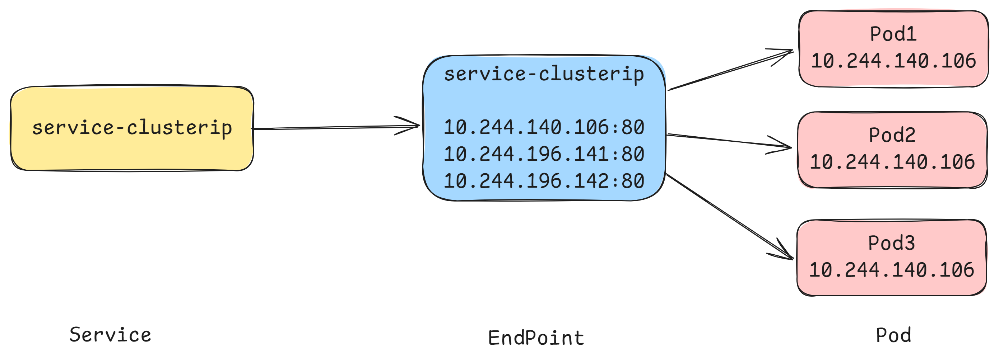
$ kubectl get endpoints -o wide
NAME ENDPOINTS AGE
service-clusterip 10.244.140.106:80,10.244.196.141:80,10.244.196.142:80 6m27s
在deployment中添加一个就绪探测
apiVersion: apps/v1
kind: Deployment
metadata:
labels:
app: myapp-deploy
name: myapp-deploy
spec:
replicas: 3
selector:
matchLabels:
app: myapp-deploy
template:
metadata:
labels:
app: myapp-deploy
spec:
containers:
- name: myapp
image: aaronxudocker/myapp:v1.0
resources:
limits:
memory: "128Mi"
cpu: "500m"
readinessProbe:
httpGet:
port: 80
path: /index1.html
initialDelaySeconds: 1
periodSeconds: 3
ports:
- containerPort: 80
在不满足就绪探测的情况下，是不会被endpoint采用的
$ kubectl get pod
NAME READY STATUS RESTARTS AGE
myapp-deploy-659f9975b8-2sntn 0/1 Running 0 40s
myapp-deploy-659f9975b8-nd66b 0/1 Running 0 40s
myapp-deploy-659f9975b8-p4j5k 0/1 Running 0 40s
$ kubectl get endpoints
NAME ENDPOINTS AGE
service-clusterip 10s
满足了就绪探测和标签被匹配上的pod会被加入endpoint中
$ kubectl exec -it myapp-deploy-659f9975b8-2sntn -- /bin/bash
root@myapp-deploy-659f9975b8-2sntn:/# echo "hello world" > /usr/share/nginx/html/index1.html
$ kubectl get pod
NAME READY STATUS RESTARTS AGE
myapp-deploy-659f9975b8-2sntn 1/1 Running 0 3m4s
myapp-deploy-659f9975b8-nd66b 0/1 Running 0 3m4s
myapp-deploy-659f9975b8-p4j5k 0/1 Running 0 3m4s
$ kubectl get endpoints
NAME ENDPOINTS AGE
service-clusterip 10.244.140.107:80 3m1s
$ ipvsadm -L -n
IP Virtual Server version 1.2.1 (size=4096)
Prot LocalAddress:Port Scheduler Flags
-> RemoteAddress:Port Forward Weight ActiveConn InActConn
TCP 10.12.150.224:80 rr
-> 10.244.140.107:80 Masq 1 0 0
负载分发策略
对Service的访问被分发到了后端的Pod上去，目前kubernetes提供了两种负载分发策略：
如果不定义，默认使用kube-proxy的策略，比如随机、轮询
基于客户端地址的会话保持模式，即来自同一个客户端发起的所有请求都会转发到固定的一个Pod上
此模式可以使在spec中添加
sessionAffinity: ClientIP选项
$ kubectl edit svc service-clusterip
sessionAffinity: ClientIP
$ while true;do curl 10.13.125.29/hostname.html; done
myapp-deploy-57bff895d5-fbln4
myapp-deploy-57bff895d5-fbln4
myapp-deploy-57bff895d5-fbln4
myapp-deploy-57bff895d5-fbln4
myapp-deploy-57bff895d5-fbln4
myapp-deploy-57bff895d5-fbln4
myapp-deploy-57bff895d5-fbln4
myapp-deploy-57bff895d5-fbln4
$ ipvsadm -Ln
IP Virtual Server version 1.2.1 (size=4096)
Prot LocalAddress:Port Scheduler Flags
-> RemoteAddress:Port Forward Weight ActiveConn InActConn
TCP 10.13.125.29:80 rr persistent 10800
-> 10.244.140.106:80 Masq 1 0 155
-> 10.244.196.141:80 Masq 1 0 0
-> 10.244.196.142:80 Masq 1 0 0
HeadLess类型的Service
在某些场景中，开发人员可能不想使用Service提供的负载均衡功能，而希望自己来控制负载均衡策略，针对这种情况，kubernetes提供了HeadLiness Service，这类Service不会分配Cluster IP，如果想要访问service，只能通过service的域名进行查询。
apiVersion: v1
kind: Service
metadata:
name: service-headliness
spec:
selector:
app: myapp-deploy
clusterIP: None # 将clusterIP设置为None，即可创建headliness Service
type: ClusterIP
ports:
- port: 80
targetPort: 80
$ kubectl get svc -o wide
NAME TYPE CLUSTER-IP EXTERNAL-IP PORT(S) AGE SELECTOR
service-headliness ClusterIP None <none> 80/TCP 40s app=myapp-deploy
$ kubectl describe svc service-headliness
Name: service-headliness
Namespace: default
Labels: <none>
Annotations: <none>
Selector: app=myapp-deploy
Type: ClusterIP
IP Family Policy: SingleStack
IP Families: IPv4
IP: None
IPs: None
Port: <unset> 80/TCP
TargetPort: 80/TCP
Endpoints: 10.244.140.107:80
Session Affinity: None
Events: <none>
$ kubectl exec -it myapp-deploy-659f9975b8-2sntn -- /bin/bash
root@myapp-deploy-659f9975b8-2sntn:/# cat /etc/resolv.conf
nameserver 10.0.0.10
search default.svc.cluster.local svc.cluster.local cluster.local
options ndots:5
$ dig @10.0.0.10 service-headliness.default.svc.cluster.local
;; ANSWER SECTION:
service-headliness.default.svc.cluster.local. 30 IN A 10.244.140.107
service-headliness.default.svc.cluster.local. 30 IN A 10.244.196.145
service-headliness.default.svc.cluster.local. 30 IN A 10.244.196.144
NodePort类型的Service
在之前的样例中，创建的Service的ip地址只有集群内部才可以访问，如果希望将Service暴露给集群外部使用，那么就要使用到另外一种类型的Service，称为NodePort类型。NodePort的工作原理其实就是将service的端口映射到Node的一个端口上，然后就可以通过NodeIp:NodePort来访问service了。
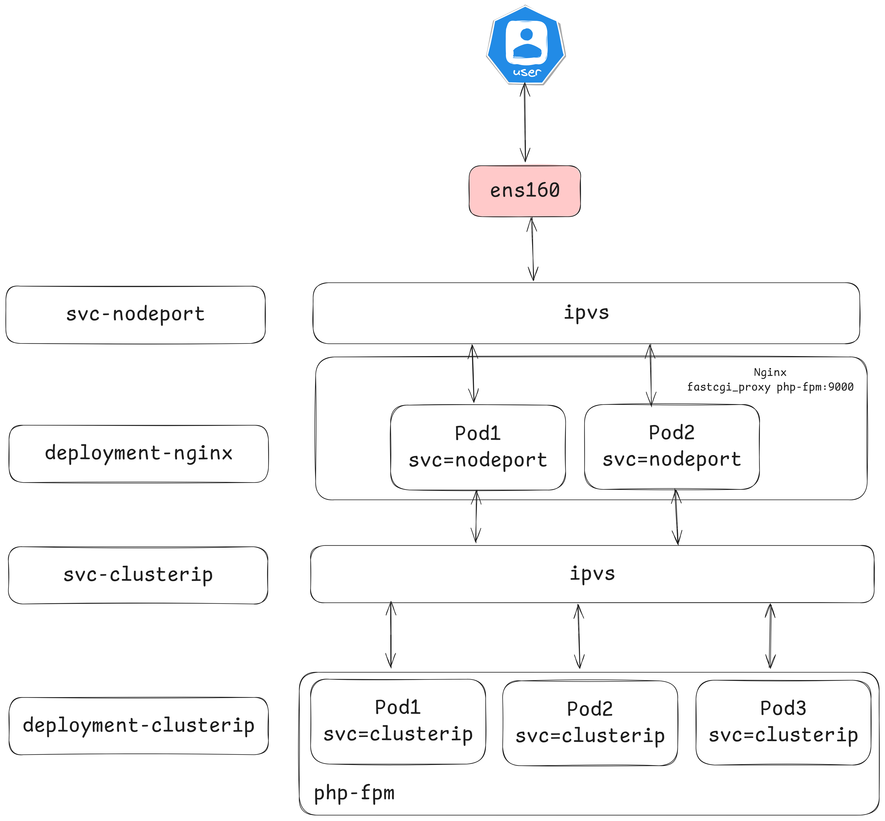
apiVersion: v1
kind: Service
metadata:
name: service-nodeport
spec:
selector:
app: myapp-deploy
type: NodePort # service类型
ports:
- port: 80
nodePort: 30002 # 指定绑定的node的端口(默认的取值范围是：30000-32767), 如果不指定，会默认分配
targetPort: 80
查看是否能够正常的访问
$ for i in {1..6};do curl 192.168.173.100:30002/hostname.html;done
myapp-deploy-659f9975b8-nd66b
myapp-deploy-659f9975b8-p4j5k
myapp-deploy-659f9975b8-2sntn
myapp-deploy-659f9975b8-nd66b
myapp-deploy-659f9975b8-p4j5k
myapp-deploy-659f9975b8-2sntn
LoadBalancer类型的Service
LoadBalancer和NodePort很相似，目的都是向外部暴露一个端口，区别在于LoadBalancer会在集群的外部再来做一个负载均衡设备，而这个设备需要外部环境支持的，外部服务发送到这个设备上的请求，会被设备负载之后转发到集群中。
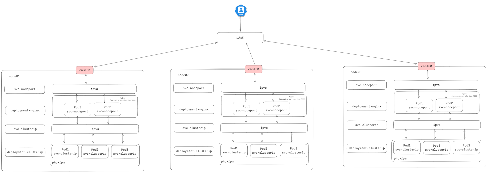
ExternalName类型的Service
ExternalName类型的Service用于引入集群外部的服务，它通过externalName属性指定外部一个服务的地址，然后在集群内部访问此service就可以访问到外部的服务了。
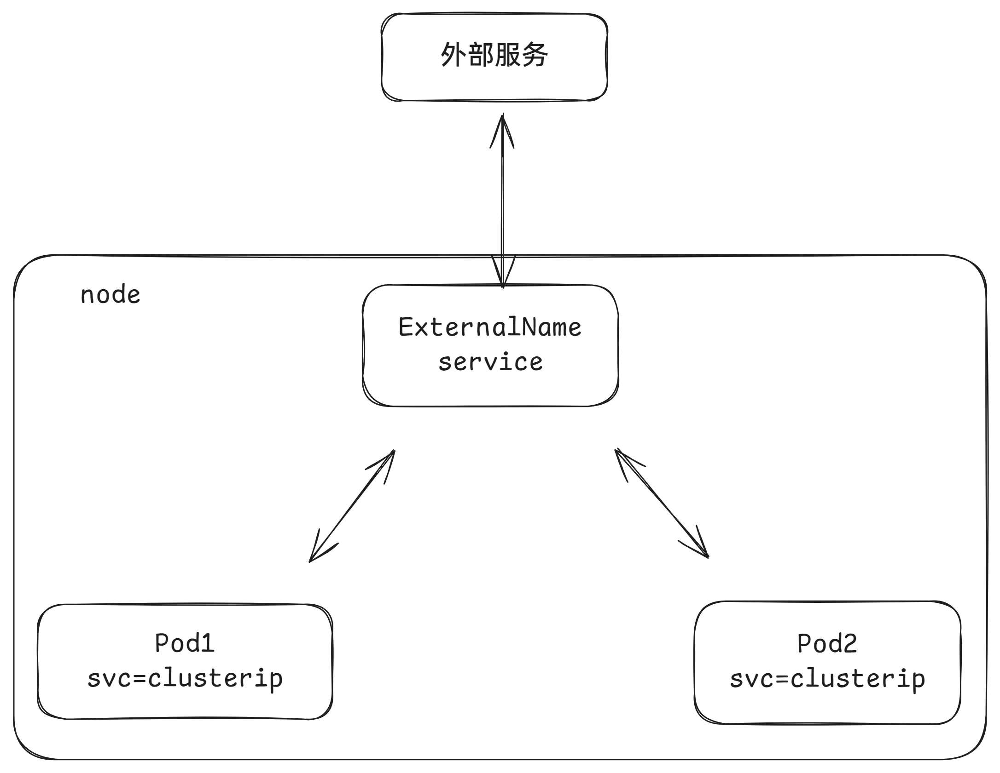
apiVersion: v1
kind: Service
metadata:
name: service-externalname
namespace: dev
spec:
type: ExternalName # service类型
externalName: www.baidu.com #改成ip地址也可以
$ kubectl get svc
NAME TYPE CLUSTER-IP EXTERNAL-IP PORT(S) AGE
service-externalname ExternalName <none> www.baidu.com <none> 7s
$ dig @10.0.0.10 service-externalname.default.svc.cluster.local
;; ANSWER SECTION:
service-externalname.default.svc.cluster.local. 30 IN CNAME www.baidu.com.
www.baidu.com. 30 IN CNAME www.a.shifen.com.
www.a.shifen.com. 30 IN A 180.101.50.242
www.a.shifen.com. 30 IN A 180.101.50.188
Ingress介绍
在前面课程中已经提到，Service对集群之外暴露服务的主要方式有两种：NotePort和LoadBalancer，但是这两种方式，都有一定的缺点：
- NodePort方式的缺点是会占用很多集群机器的端口，那么当集群服务变多的时候，这个缺点就愈发明显
- LB方式的缺点是每个service需要一个LB，浪费、麻烦，并且需要kubernetes之外设备的支持
基于这种现状，kubernetes提供了Ingress资源对象，Ingress只需要一个NodePort或者一个LB就可以满足暴露多个Service的需求。工作机制大致如下图表示：
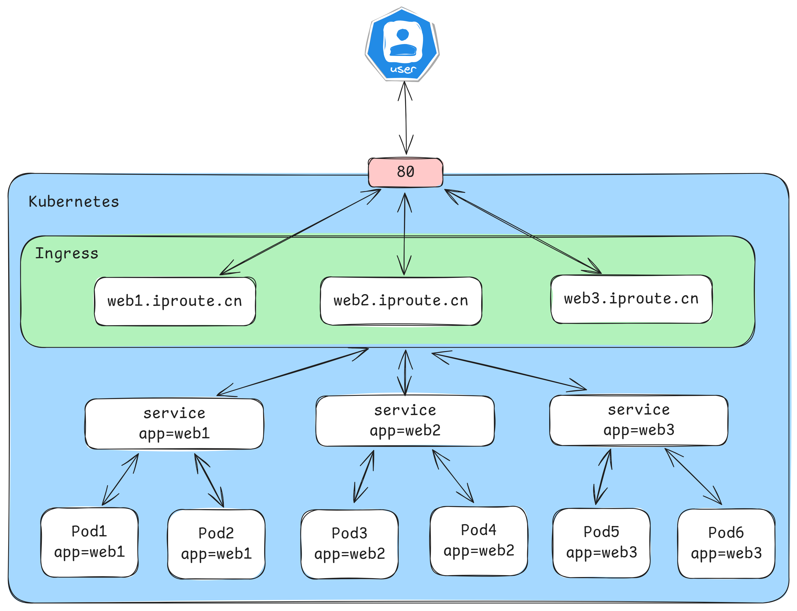
实际上，Ingress相当于一个7层的负载均衡器，是kubernetes对反向代理的一个抽象，它的工作原理类似于Nginx，可以理解成在Ingress里建立诸多映射规则，Ingress Controller通过监听这些配置规则并转化成Nginx的反向代理配置 , 然后对外部提供服务。在这里有两个核心概念：
- ingress：kubernetes中的一个对象，作用是定义请求如何转发到service的规则
- ingress controller：具体实现反向代理及负载均衡的程序，对ingress定义的规则进行解析，根据配置的规则来实现请求转发，实现方式有很多，比如Nginx, Contour, Haproxy等等
Ingress（以Nginx为例）的工作原理如下：
- 用户编写Ingress规则，说明哪个域名对应kubernetes集群中的哪个Service
- Ingress控制器动态感知Ingress服务规则的变化，然后生成一段对应的Nginx反向代理配置
- Ingress控制器会将生成的Nginx配置写入到一个运行着的Nginx服务中，并动态更新
- 到此为止，其实真正在工作的就是一个Nginx了，内部配置了用户定义的请求转发规则
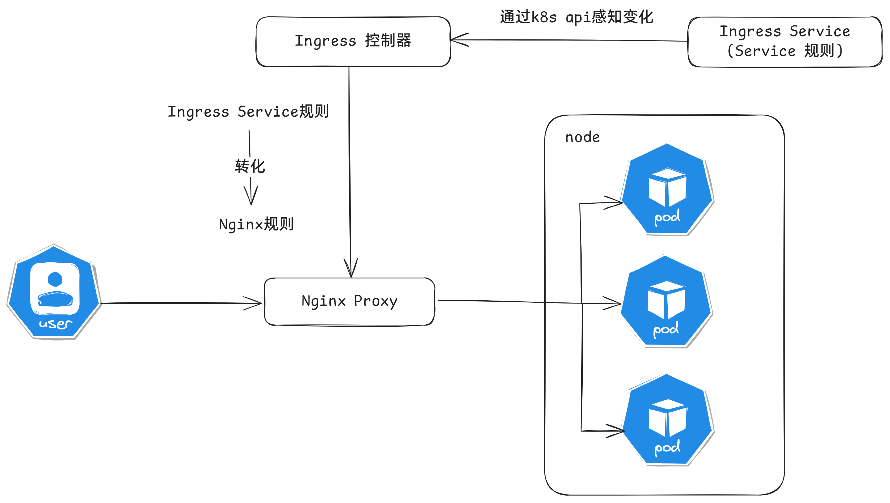
安装helm
# 安装helm，helm在kubernetes中相当于yum，是可以在线去获取资源清单，快速部署服务
$ curl -fsSL -o get_helm.sh https://raw.githubusercontent.com/helm/helm/main/scripts/get-helm-3
$ chmod 700 get_helm.sh
$ ./get_helm.sh
# 初始化,可以从 https://artifacthub.io/ 中选择一个可用的仓库地址
$ helm repo add bitnami https://charts.bitnami.com/bitnami
$ helm repo list
NAME URL
bitnami https://charts.bitnami.com/bitnami
# 常见操作
$ helm repo update # 更新chart列表
$ helm show chart bitnami/apache # 查看chart基本信息
$ helm install bitnami/apache --generate-name # 部署chart
$ helm list # 查看部署包，加上--all可以看到所有的
$ helm uninstall apache-1726297430 # 删除这个安装包所有的kubernetes资源
$ helm search hub wordpress # 在 helm hub(https://hub.helm.sh)上搜索helm chart
$ helm search repo wordpress # 在repo中搜索
安装Ingress-nginx
$ helm repo add ingress-nginx https://kubernetes.github.io/ingress-nginx
$ helm pull ingress-nginx/ingress-nginx
# 修改 values.yaml 文件
修改 hostNetwork 的值为 true
dnsPolicy的值改为: ClusterFirstWithHostNet
kind类型更改为：DaemonSet
ingressClassResource.default:true
# 关闭所有镜像的 digest
# 如果是本地的helm chart，使用这个命令安装
$ kubectl create ns ingress
$ helm install ingress-nginx -n ingress . -f values.yaml
$ kubectl get pod -n ingress
NAME READY STATUS RESTARTS AGE
ingress-nginx-controller-7c4x8 1/1 Running 0 12s
ingress-nginx-controller-bjk4s 1/1 Running 0 12s
实验测试
创建如下两个资源模型
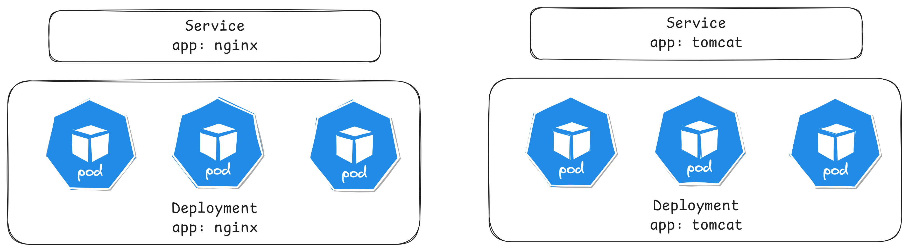
apiVersion: apps/v1
kind: Deployment
metadata:
name: nginx-deployment
spec:
replicas: 3
selector:
matchLabels:
app: nginx
template:
metadata:
labels:
app: nginx
spec:
containers:
- name: nginx
image: aaronxudocker/myapp:v1.0
ports:
- containerPort: 80
---
apiVersion: apps/v1
kind: Deployment
metadata:
name: tomcat-deployment
spec:
replicas: 3
selector:
matchLabels:
app: tomcat
template:
metadata:
labels:
app: tomcat
spec:
containers:
- name: tomcat
image: tomcat:8.5-jre10-slim
ports:
- containerPort: 8080
---
apiVersion: v1
kind: Service
metadata:
name: nginx-service
spec:
selector:
app: nginx
clusterIP: None
type: ClusterIP
ports:
- port: 80
targetPort: 80
---
apiVersion: v1
kind: Service
metadata:
name: tomcat-service
spec:
selector:
app: tomcat
clusterIP: None
type: ClusterIP
ports:
- port: 8080
targetPort: 8080
Http代理
apiVersion: networking.k8s.io/v1
kind: Ingress
metadata:
name: ingress-nginx
spec:
rules:
- host: nginx.iproute.cn
http:
paths:
- path: /
pathType: Prefix
backend:
service:
name: nginx-service
port:
number: 80
ingressClassName: nginx
---
apiVersion: networking.k8s.io/v1
kind: Ingress
metadata:
name: ingress-tomcat
spec:
rules:
- host: tomcat.iproute.cn
http:
paths:
- path: /
pathType: Prefix
backend:
service:
name: tomcat-service
port:
number: 8080
ingressClassName: nginx
查看运行状态
$ kubectl get ing
NAME CLASS HOSTS ADDRESS PORTS AGE
ingress-nginx nginx nginx.iproute.cn 80 7s
ingress-tomcat nginx tomcat.iproute.cn 80 7s
$ kubectl describe ing
Rules:
Host Path Backends
---- ---- --------
nginx.iproute.cn
/ nginx-service:80 (10.244.140.109:80,10.244.196.149:80,10.244.196.150:80)
Rules:
Host Path Backends
---- ---- --------
tomcat.iproute.cn
/ tomcat-service:8080 (10.244.140.110:8080,10.244.196.151:8080,10.244.196.153:8080)
访问测试
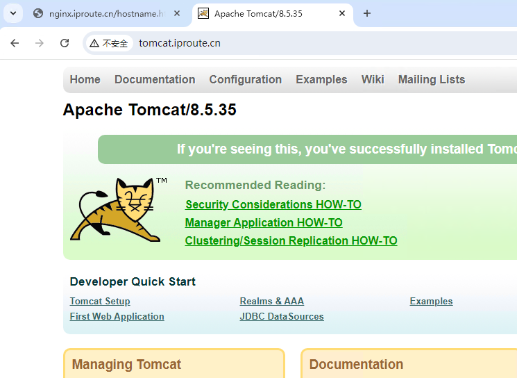
其中nginx多次访问主机名，可以看到负载均衡
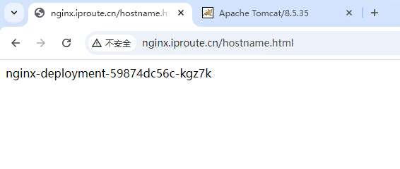
Https代理
创建证书
# 生成证书
$ openssl req -x509 -sha256 -nodes -days 365 -newkey rsa:2048 -keyout tls.key -out tls.crt -subj "/C=CN/ST=BJ/L=BJ/O=nginx/CN=iproute.cn"
# 创建密钥
$ kubectl create secret tls tls-secret --key tls.key --cert tls.crt
创建资源清单
apiVersion: networking.k8s.io/v1
kind: Ingress
metadata:
name: https-nginx
spec:
tls:
- hosts:
- nginx.iproute.cn
secretName: tls-secret # 指定秘钥
rules:
- host: nginx.iproute.cn
http:
paths:
- path: /
pathType: Prefix
backend:
service:
name: nginx-service
port:
number: 80
ingressClassName: nginx
---
apiVersion: networking.k8s.io/v1
kind: Ingress
metadata:
name: tomcat-https
spec:
tls:
- hosts:
- tomcat.iproute.cn
secretName: tls-secret # 指定秘钥
rules:
- host: tomcat.iproute.cn
http:
paths:
- path: /
pathType: Prefix
backend:
service:
name: tomcat-service
port:
number: 8080
ingressClassName: nginx
访问测试
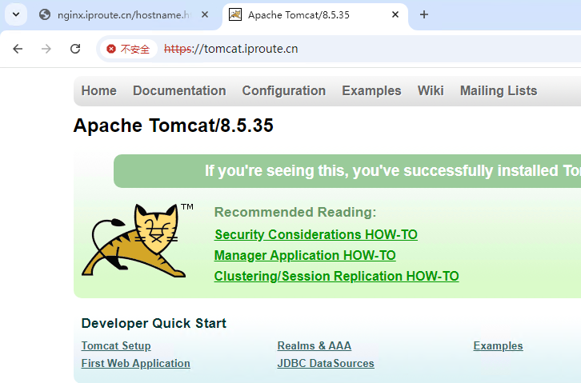
可以看到负载均衡
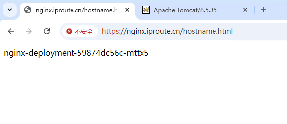
学前沿IT，到英格科技!本文发布时间： 2025-03-30 23:07:56